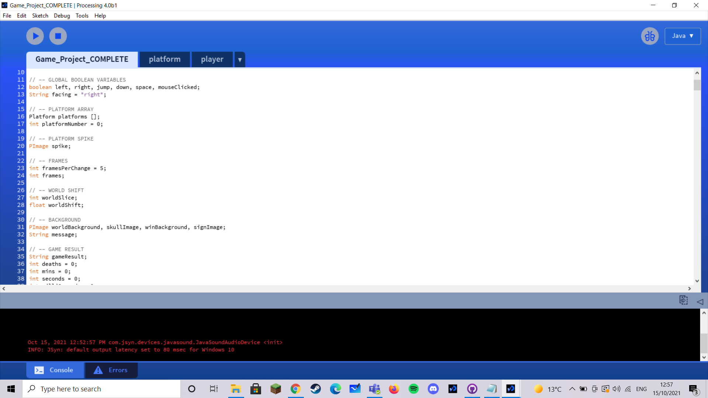
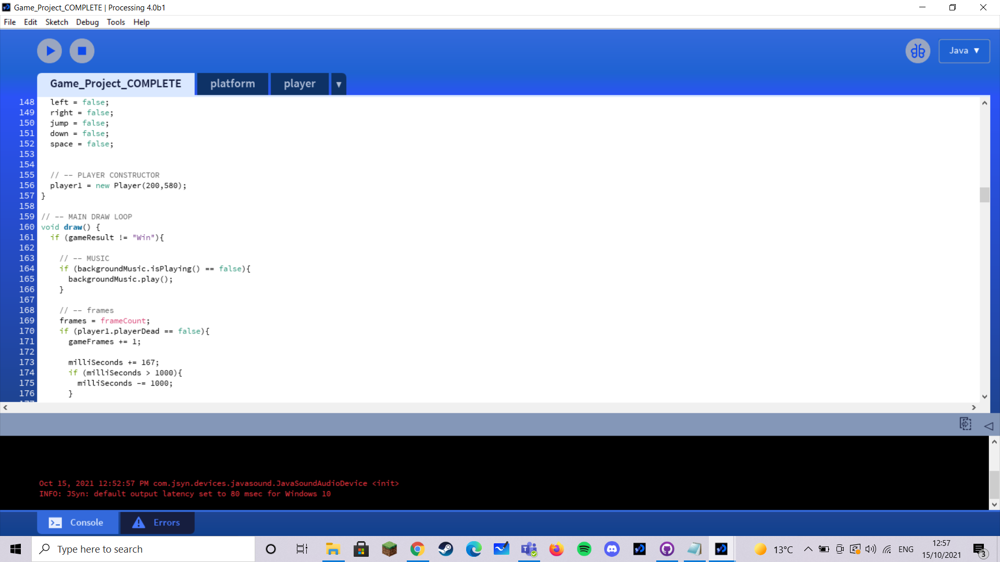
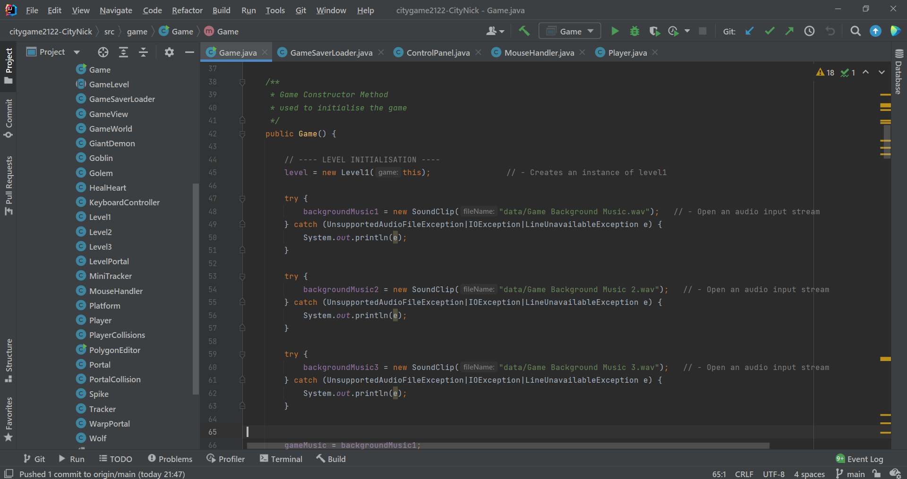
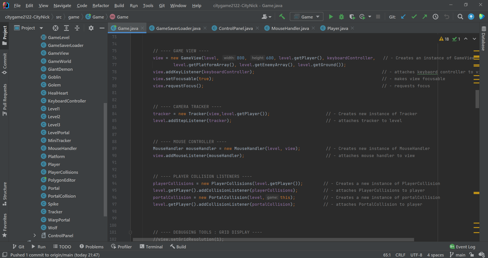
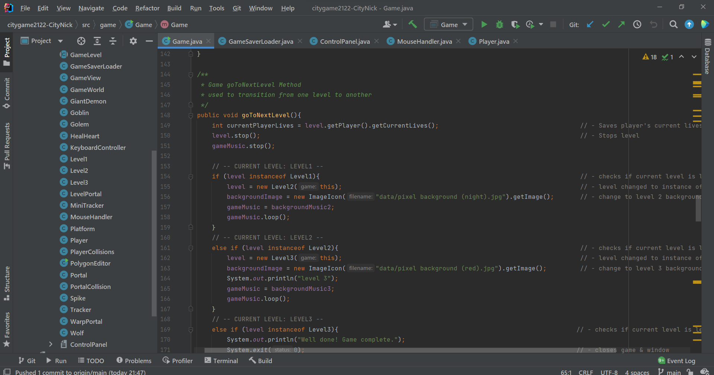

Nick Andrei TrivinoHello everyone, I'm a filipino student at City, studying Computer Science with Cyber Security MSCi. In terms of programming I have a moderate amount of experience with it, in particular when it comes to games, as it was part of my coursework for A levels in which we made a game with python. A few of my personal interests are simply coding, gaming, and most of all food ( ͡° ͜ʖ ͡°) |
|
|
|
|
Bootcamp 2021: Platform GameMy first programming project, concluding the 2 week Programming Bootcamp at City (2021). This Processing project demonstrates a comprehensive understanding of the use of classes, arrays, subroutines and selection statements to create an interactive 2D platoform game. The game is not only able to differentiate between different platforms but can also apply collision effects when the player interacts with them, dependant on the platform and the parameters used when an instance was made. World scrolling with the use of selection statements, also gives the project the illusion of a much wider world than what is initally seen in the game window. Arrays are also used to cycle between the different sprite images for the player, giving the player a more lifelike animation rather than a still sprite. Check out the code on Github: https://github.com/CityNick/Bootcamp_platform_game_project | |
|    | |
|
|
|
Programming With Java: City Game Coursework
For my Java coursework I was tasked with creating a game utilising city-engine, a physics engine designed
by City, University of London. The concept I went for was a simple platformer game in which the player would need
need to carefully navigate around each level, and avoid numerous bodies such as enemies and spikes and even false
hearts. | |
|   | |